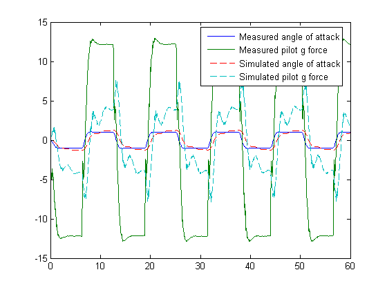
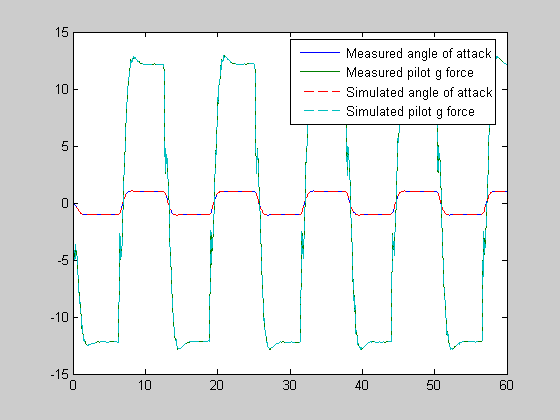

Contents
Open the model and load experimental data.
open_system('f14')
load f14_estim_data
Plot measured data and simulation results
[T,X,Y] = sim('f14', time, [], [time iodata(:,1)]);
plot(time, iodata(:,2:3), T, Y, '--');
legend( 'Measured angle of attack', 'Measured pilot g force', ...
'Simulated angle of attack', 'Simulated pilot g force');
Create objects to represent the experimental data sets.
hExp = ParameterEstimator.TransientExperiment(gcs);
set(hExp.InputData(1), 'Data', iodata(:,1), 'Time', time);
set(hExp.OutputData(1), 'Data', iodata(:,2), 'Time', time, 'Weight', 5);
set(hExp.OutputData(2), 'Data', iodata(:,3), 'Time', time);
Create objects to represent parameters.
hPar(1) = ParameterEstimator.Parameter('Ta');
set(hPar(1), 'Minimum', 0.01, 'Maximum', 1, 'Estimated', true)
hPar(2) = ParameterEstimator.Parameter('Md');
set(hPar(2), 'Minimum', -10, 'Maximum', 0, 'Estimated', true)
hPar(3) = ParameterEstimator.Parameter('Zd');
set(hPar(3), 'Minimum', -100, 'Maximum', 0, 'Estimated', true)
Create objects to represent estimated initial states.
hIc(1) = ParameterEstimator.State('f14/Actuator Model');
set(hIc(1), 'Minimum', 0, 'Estimated', false)
Create the estimation object and run estimation
hEst = ParameterEstimator.Estimation(gcs, hPar, hExp);
hEst.States = hIc;
Setup estimation options
hEst.OptimOptions.Algorithm = 'lsqnonlin';
hEst.OptimOptions.GradientType = 'refined';
hEst.OptimOptions.Display = 'iter';
Run the estimation
estimate(hEst);
Creating the temporary model 'tp372656' for computing gradients...
...Completed.
Norm of First-order
Iteration Func-count f(x) step optimality CG-iterations
0 1 118351 9.34e+005
1 2 41131.6 0.819774 2.36e+005 1
2 3 12463.6 0.903429 4.74e+004 1
3 4 3782.03 1.01679 9.59e+003 1
4 5 1073.6 0.75752 2.54e+003 1
5 6 244.667 0.478213 767 1
6 7 25.9756 0.374151 134 1
7 8 1.45973 1.00585 110 1
8 9 0.00789984 0.537131 1.4 1
9 10 0.00112732 0.0429286 0.00872 1
Optimization terminated: first-order optimality less than OPTIONS.TolFun,
and no negative/zero curvature detected in trust region model.
Plot measured data and final simulation results
[T,X,Y] = sim('f14', time, [], [time iodata(:,1)]);
figure
plot(time, iodata(:,2:3), T, Y, '--');
legend( 'Measured angle of attack', 'Measured pilot g force', ...
'Simulated angle of attack', 'Simulated pilot g force');
Look at the estimated values
find(hEst.Parameters, 'Estimated', true)
(1) Parameter data for 'Ta':
Parameter value : 0.05
Initial guess : 0.5
Estimated : true
Referenced by:
(2) Parameter data for 'Md':
Parameter value : -6.884
Initial guess : -1
Estimated : true
Referenced by:
(3) Parameter data for 'Zd':
Parameter value : -63.99
Initial guess : -80
Estimated : true
Referenced by: